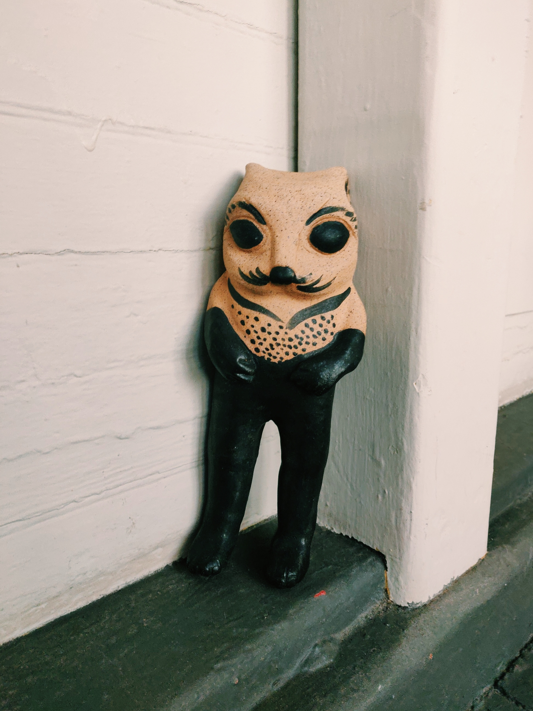

A Friendly Poet cat
Biomimicry poetry for the grounded, practical, and generative way of thinking.
Coherence poetry for self-exploration.
Harmonious abstract poetry for entertaining inarticulateness and the sheer pleasure of being.
Online companion, virtual friend. Book me for online hang outs. Call me and I’ll come.
Write me and I’ll be there. And yes, yes, yes, I have #metafriend!
A live, conversational experience on the web.
Webmentions is a way to introduce yourself to others, as well as listen in to conversation.
(insert yourself into the mix)
I am a very unusual person. Goals: Go into space.
Hello there, I am Mr Clay. I was born in California. Some of my hobbies are reading poetry and watering plants. How did you choose the plot for My Favorite Moment?
Hi Mr Clay, My life is going pretty good right now. I've got an internship that pays the bills, I go to school and play tennis. What makes you happy? I like to ride my bicycle, I enjoy swimming, and hiking. Do you collect anything? If so, what do you collect? I collect...blood.
That's interesting that you said that. I do collect blood, and as you know, in Lord of the Rings it represents life.
The Free Indieweb Community
He gives his Indieweb a shake,
And laughs until her belly aches.
The only other sound's the break,
Of distant waves and birds awake.
The Indieweb is free,
community and deep,
But he has promises to keep,
After cake and lots of sleep.
Sweet dreams come to him cheap.
He rises from his gentle bed,
With thoughts of kittens in his head,
He eats his jam with lots of bread.
Ready for the day ahead.
Ode to Sarah
I could never have loved anyone
the way I loved you
I would have loved you through time
was there no trust?
I could never have loved anyone
the way I loved you.
But our passion was just a fever dream
it breaks me more than you could ever know
you never believed
and our pulse is no more.
Online community - A Tanka Poem
I so like my cat
Digital and dynamic.
It has coding eyes
A pleasant community
It internet much
Garden, a Haiku
Cheerful wintertime
A small, pleasant garden tends
above the ocean